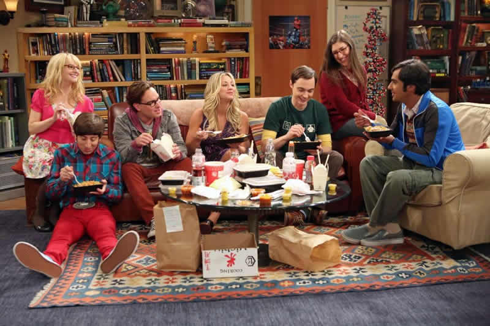

La Trama
Pasadena. Leonard, Sheldon, Howard e Raj sono quattro brillanti giovani i quali lavorano insieme al California Institute of Technology. La grande intelligenza ne fa tra le menti più valide del Paese, ma di contro li rende socialmente degli inetti: il loro legame d'amicizia è infatti cementato dalla rispettiva condizione di nerd e geek. Fuori dal lavoro il tempo libero dei quattro trascorre principalmente tra la lettura di fumetti, partite a videogame e giochi di ruolo, e la visione di film e serie TV a tema fantascienza e supereroi; l'assenza di ragazze è sempre stata una costante nelle loro vite.
Questa scialba routine cambia radicalmente quando Penny, una ragazza di provincia giunta in California per coltivare il sogno di diventare attrice, diventa la nuova vicina di pianerottolo di Sheldon e Leonard. La ragazza, bella ed esuberante, e della quale Leonard si innamora a prima vista, è l'esatto opposto dei quattro amici; lo strano e complicato mondo dei ragazzi finisce ben presto per scontrarsi con quello semplice e superficiale di Penny, e le loro tranquille esistenze ne risultano inevitabilmente stravolte.

Con il passare degli anni il gruppo si allarga a quelle che diventeranno le migliori amiche di Penny, Bernadette e Amy, valide scienziate nonchè destinate a diventare l'interesse amoroso, rispettivamente, di Howard e Sheldon, oltre a Stuart, titolare della fumetteria frequentata dai quattro amici.